Dany jest trójkąt ABC, w którym |AB| = 11, |BC| = 12 oraz |ABC| = 60◦ (zobacz rysunek).
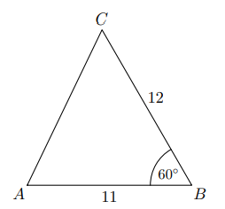Oceń prawdziwość poniższych stwierdzeń. Wybierz P, jeśli stwierdzenie jest prawdziwe, albo F – jeśli jest fałszywe.
Trójkąt ABC jest równoramienny.
Pole trójkąta ABC jest równa \(33\sqrt{3}\).
Dany jest trójkąt ABC, w którym |AB| = 5, |AC| = 2 oraz \(\cos \angle BAC = \tfrac{3}{5}\). Długość boku BC tego trójkąta jest równa
Dany jest równoległobok o bokach długości 3 i 4 oraz o kącie między nimi o mierze 120◦. Pole tego równoległoboku jest równe
W rombie ABCD dłuższa przekątna AC ma długość 12 i tworzy z bokiem AB kąt o mierze 30◦ (zobacz rysunek).
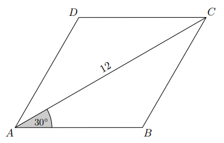Pole rombu ABCD jest równe
Dany jest trójkąt, którego kąty mają miary 30◦, 45◦ oraz 105◦. Długości boków trójkąta, leżących naprzeciwko tych kątów są równe – odpowiednio – a, b oraz c (zobacz rysunek).
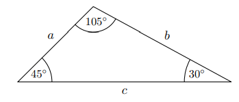Uzupełnij zdanie. Wybierz dwie właściwe odpowiedzi spośród oznaczonych literami A – F i wpisz te litery w wykropkowanych miejscach.
Pole tego trójkąta poprawnie określają wyrażenia oznaczone literami: oraz .
Pole równoległoboku ABCD jest równe \(40\sqrt{6}\). Bok AD tego równoległoboku ma długość 10, a kąt ABC równoległoboku ma miarę 135◦ (zobacz rysunek).
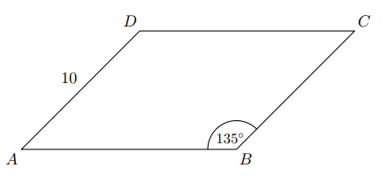Długość boku AB jest równa
W rombie o boku długości \(6\sqrt{2}\) kąt rozwarty ma miarę \(150^\circ\). Iloczyn długości przekątnych tego rombu jest równy
Dany jest trójkąt \(ABC\), w którym \(|AB|=6\), \(|BC|=5\), \(|AC|=10\).
Oceń prawdziwość poniższych stwierdzeń. Wybierz P lub F.
Cosinus kąta \(ABC\) jest równy \(-0{,}65\).
Trójkąt \(ABC\) jest rozwartokątny.
Odcinki \(AC\) i \(BD\) przecinają się w punkcie \(O\). Ponadto \(|AD|=4\) i \(|OD|=|BC|=6\). Kąty \(ODA\) i \(BCO\) są proste (zobacz rysunek).
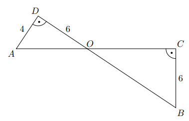Długość odcinka \(OC\) jest równa
Dany jest sześciokąt foremny \(ABCDEF\) o polu równym \(6\sqrt{3}\) (zobacz rysunek).
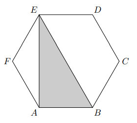Pole trójkąta \(ABE\) jest równe
Długość odcinka \(AE\) jest równa
Dany jest trapez \(ABCD\), w którym \(AB \parallel CD\) oraz przekątne \(AC\) i \(BD\) przecinają się w punkcie \(O\). Wysokość trapezu jest równa 12. Obwód trójkąta \(ABO\) jest równy 39, a obwód trójkąta \(CDO\) jest równy 13.
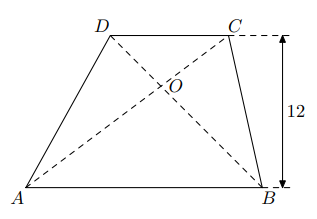Wysokość trójkąta \(ABO\) poprowadzona z punktu \(O\) jest równa
Pole prostokąta jest równe 16, a przekątne tego prostokąta przecinają się pod kątem ostrym \(\alpha\), takim, że \(\sin\alpha = 0{,}2\). Długość przekątnej tego prostokąta jest równa
Pole rombu o obwodzie 20 i kącie rozwartym \(120^\circ\) jest równe
W trójkącie miary kątów są równe: \(\alpha\), \(4\alpha\), \(\alpha+30^\circ\). Miara największego kąta tego trójkąta jest równa
Na boku \(BC\) kwadratu \(ABCD\) (na zewnątrz) zbudowano trójkąt równoboczny \(BEC\) (zobacz rysunek).
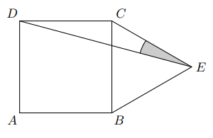Miara kąta \(DEC\) jest równa
Wysokość trójkąta równobocznego jest równa \(6\sqrt{3}\). Pole tego trójkąta jest równe
Boki równoległoboku mają długości 6 i 10, a kąt rozwarty między tymi bokami ma miarę \(120^\circ\). Pole tego równoległoboku jest równe
Dany jest trójkąt prostokątny \(ABC\) o bokach \(|AC|=24\), \(|BC|=10\), \(|AB|=26\). Dwusieczne kątów przecinają się w punkcie \(P\) (zobacz rysunek).
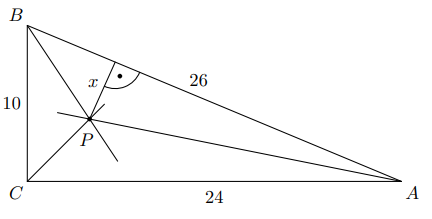Odległość \(x\) punktu \(P\) od przeciwprostokątnej \(AB\) jest równa
Jeden z boków równoległoboku ma długość równą 5. Przekątne tego równoległoboku mogą mieć długości
W pewnym trójkącie równoramiennym największy kąt ma miarę \(120^\circ\), a najdłuższy bok ma długość 12 (zobacz rysunek).
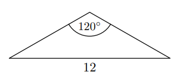Najkrótsza wysokość tego trójkąta ma długość równą
Przyprostokątna \(AC\) trójkąta prostokątnego \(ABC\) ma długość 8 oraz \(\tan\alpha=\tfrac{2}{5}\) (zobacz rysunek).
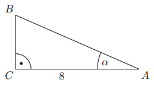Pole trójkąta jest równe
Pole pewnego trójkąta równobocznego jest równe \(\tfrac{4\sqrt{3}}{9}\). Obwód tego trójkąta jest równy
W trapezie równoramiennym \(ABCD\) podstawy \(AB\) i \(CD\) mają długości odpowiednio \(a\) i \(b\) (przy czym \(a>b\)). Miara kąta ostrego trapezu jest równa \(30^\circ\). Wtedy wysokość tego trapezu jest równa
Przyprostokątna \(AC\) trójkąta prostokątnego \(ABC\) ma długość 6, a wysokość \(CD\) dzieli go na dwa takie trójkąty \(ADC\) i \(CDB\), że pole trójkąta \(ADC\) jest 4 razy większe od pola \(CDB\) (zobacz rysunek).
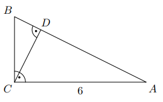Przyprostokątna \(BC\) trójkąta prostokątnego \(ABC\) jest równa
Pole trójkąta równoramiennego jest równe \(25\sqrt{2}\). Miara kąta między ramionami tego trójkąta jest równa \(45^\circ\). Każde z ramion tego trójkąta ma długość
Pole prostokąta \(ABCD\) jest równe 90. Na bokach \(AB\) i \(CD\) wybrano punkty \(P\) i \(R\) takie, że \(\dfrac{|AP|}{|PB|}=\dfrac{|CR|}{|RD|}=\tfrac{3}{2}\) (zobacz rysunek).
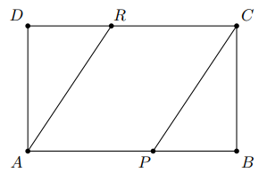Pole czworokąta \(APCR\) jest równe
Dany jest romb o boku długości 4 i kącie rozwartym 150◦. Pole tego rombu jest równe
Różnica miar dwóch sąsiednich kątów wewnętrznych równoległoboku jest równa \(80^\circ\). Kąt rozwarty tego równoległoboku ma miarę
Pole trójkąta o bokach długości 4 oraz 9 i kącie między nimi o mierze \(60^\circ\) jest równe
Długości boków trapezu równoramiennego są równe 12, 13, 2, 13 (zobacz rysunek).
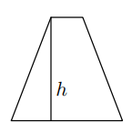Wysokość \(h\) trapezu jest równa
Miara kątów pewnego czworokąta pozostają w stosunku \(2:3:3:4\). Wynika stąd, że najmniejszy kąt tego czworokąta ma miarę
Dany jest trapez prostokątny \(KLMN\), którego podstawy mają długości \(|KL|=a\), \(|MN|=b\), \(a>b\). Kąt \(KLM\) ma miarę \(60^\circ\). Długość ramienia \(LM\) tego trapezu jest równa
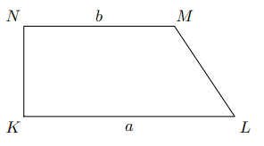Dany jest trójkąt równoboczny, którego pole jest równe \(6\sqrt{3}\). Bok tego trójkąta ma długość
Pole trójkąta prostokątnego \(ABC\), przedstawionego na rysunku, jest równe (zobacz rysunek).
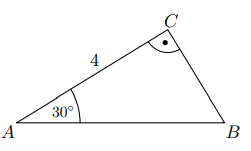Wybierz poprawną wartość pola.
Przekątne równoległoboku mają długości 4 i 8, a kąt między tymi przekątnymi ma miarę \(30^\circ\). Pole tego równoległoboku jest równe
Każde z ramion trójkąta równoramiennego ma długość 20. Kąt zawarty między ramionami tego trójkąta ma miarę \(150^\circ\). Pole tego trójkąta jest równe
Punkty \(D\) i \(E\) są środkami przyprostokątnych \(AC\) i \(BC\) trójkąta prostokątnego \(ABC\). Punkty \(F\) i \(G\) leżą na przeciwprostokątnej \(AB\) tak, że odcinki \(DF\) i \(EG\) są do niej prostopadłe (zobacz rysunek). Pole trójkąta \(BGE\) jest równe 1, a pole trójkąta \(AFD\) jest równe 4.
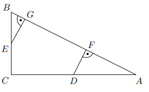Zatem pole trójkąta \(ABC\) jest równe
Z odcinków o długościach: 5, \(2a+1\), \(a-1\) można zbudować trójkąt równoramienny. Wynika stąd, że
Pole rombu o bokach 6 i kącie rozwartym \(150^\circ\) jest równe
Długości boków trójkąta są liczbami całkowitymi. Jeden bok ma 7 cm, a drugi ma 2 cm. Trzeci bok tego trójkąta może mieć długość
Boki trójkąta mają długości 20 i 12, a kąt między tymi bokami ma miarę \(120^\circ\). Pole tego trójkąta jest równe
Dany jest trójkąt równoramienny, w którym ramię o długości 20 tworzy z podstawą kąt \(67{,}5^\circ\). Pole tego trójkąta jest równe
Na planie miasta, narysowanym w skali \(1:20000\), park jest prostokątem o bokach 2 cm i 5 cm. Stąd wynika, że ten park ma powierzchnię
W trapezie \(KLMN\), w którym \(KL \parallel MN\), kąt \(LKN\) jest prosty (zobacz rysunek) oraz dane są: \(|MN|=3\), \(|KN|=4\sqrt{3}\), \(|KLM|=60^\circ\). Pole tego trapezu jest równe
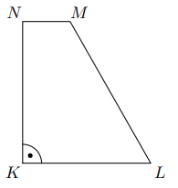Wysokość trapezu równoramiennego o kącie ostrym \(60^\circ\) i ramieniu długości \(2\sqrt{3}\) jest równa
Najdłuższa przekątna sześciokąta foremnego ma długość 8. Wówczas pole koła opisanego na tym sześciokącie jest równe
Pole równoległoboku o bokach długości 4 i 12 oraz kącie ostrym \(30^\circ\) jest równe
Z prostokąta \(ABCD\) o obwodzie 30 wycięto trójkąt równoboczny \(AOD\) o obwodzie 15 (tak jak na rysunku). Obwód zacieniowanej figury jest równy
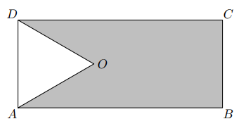Kosinus kąta ostrego rombu jest równy \(\tfrac{\sqrt{3}}{2}\), bok rombu ma długość 3. Pole tego rombu jest równe
Pole prostokąta jest równe 40. Stosunek długości jego boków jest równy \(2:5\). Dłuższy bok tego prostokąta jest równy
Dany jest romb o boku długości 4 i kącie ostrym \(60^\circ\). Pole tego rombu jest równe
Wysokość rombu o boku długości 6 i kącie ostrym \(60^\circ\) jest równa
Latawiec ma wymiary podane na rysunku. Powierzchnia zacieniowanego trójkąta jest równa (zobacz rysunek)
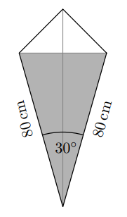Długość ramienia \(BC\) trapezu prostokątnego jest dwa razy większa od różnicy długości jego podstaw. Kąt \(ABC\) ma miarę
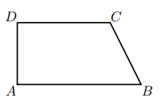Drut o długości 27 m pocięto na trzy części, których stosunek długości jest równy \(2:3:4\). Jaką długość ma najkrótsza z tych części?
Dane są trójkąt równoramienny \(ABC\), w którym \(|AC|=|BC|\) i \(\angle ACB=45^\circ\), oraz kwadrat \(DEFG\) o polu równym 1. Wierzchołki \(E\) i \(F\) kwadratu leżą na ramieniu \(BC\) danego trójkąta, wierzchołek \(G\) leży na ramieniu \(AC\), a wierzchołek \(D\) leży na podstawie \(AB\) trójkąta (zobacz rysunek).
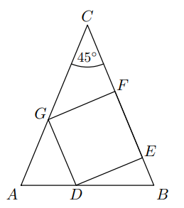Oceń prawdziwość poniższych stwierdzeń. Wybierz P lub F.
\(|AGD| = 45^\circ\)
\(|AG| - |BE| = 2 - \sqrt{2}\)